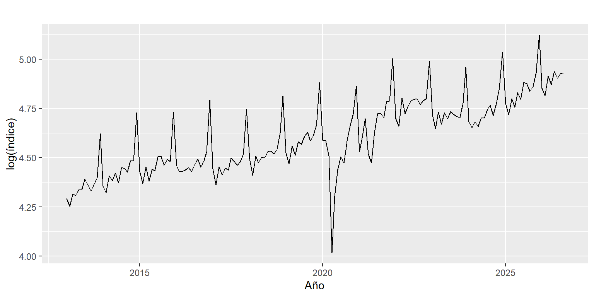

Capítulo 6 Transformación de la serie
A partir de este capítulo empieza la Unidad 3. La idea es dejar la serie lista para los modelos de pronóstico, y se hace en tres pasos:
- Revisar si hace falta transformar la serie para controlar su variabilidad (este capítulo).
- Descomponerla para ver con claridad qué tendencia y qué estacionalidad hay que controlar (capítulo 7).
- Comprobar si es estacionaria y diferenciarla si no lo es (capítulo 8).
6.1 ¿Hace falta transformar?
En la Figura 2.1 se nota que los picos de diciembre son cada vez más altos: a medida que la serie crece, también crecen sus subidas y bajadas. Para comprobarlo se calcula, para cada año, el promedio del índice y su desviación estándar:
anio <- floor(time(y))
tabla <- data.frame(
promedio = tapply(y, anio, mean),
desviacion = tapply(y, anio, sd),
desv_log = tapply(log(y), anio, sd)
)
round(tabla, 2)## promedio desviacion desv_log
## 2013 78.55 7.95 0.09
## 2014 85.23 9.67 0.10
## 2015 88.04 8.87 0.09
## 2016 89.42 10.20 0.10
## 2017 88.46 9.06 0.09
## 2018 93.90 10.27 0.10
## 2019 100.00 11.33 0.10
## 2020 93.82 18.66 0.21
## 2021 109.00 16.55 0.15
## 2022 119.73 10.13 0.08
## 2023 113.94 9.65 0.08
## 2024 116.00 13.64 0.11
## 2025 128.27 14.52 0.10
## 2026 133.69 5.76 0.04La desviación estándar pasa de cerca de 8 en 2013 a más de 14 en 2025, es decir, la variabilidad crece con el nivel. Lo que se mantiene casi constante es la proporción: en casi todos los años la desviación es alrededor del 10 % del promedio. Cuando la variabilidad crece en proporción al nivel, la transformación indicada es el logaritmo.
La última columna lo confirma: con el logaritmo, la desviación queda cerca de 0,10 todos los años. Las excepciones son 2020 y 2021, que se alteran por la pandemia y no por el nivel de la serie, y 2026, que solo tiene ocho meses y no incluye diciembre.
6.2 ¿Por qué logaritmo y no otra transformación?
La transformación de Box-Cox incluye al logaritmo como caso particular, y la función BoxCox.lambda() sugiere un valor para su parámetro:
## [1] 0.8312108El valor sugerido está entre 1 (no transformar) y 0 (logaritmo). Se prefiere el logaritmo por dos razones prácticas: la tabla anterior muestra que estabiliza bien la variabilidad, y sus resultados son fáciles de interpretar, porque una diferencia en logaritmos equivale, aproximadamente, a una variación porcentual.

Figura 6.1: Logaritmo del índice de ventas reales.
En la Figura 6.1 los picos de diciembre tienen un tamaño parecido al principio y al final de la serie. La transformación controla la variabilidad, pero no quita la tendencia: la serie sigue subiendo. Eso se trata con la diferenciación en el capítulo 8.